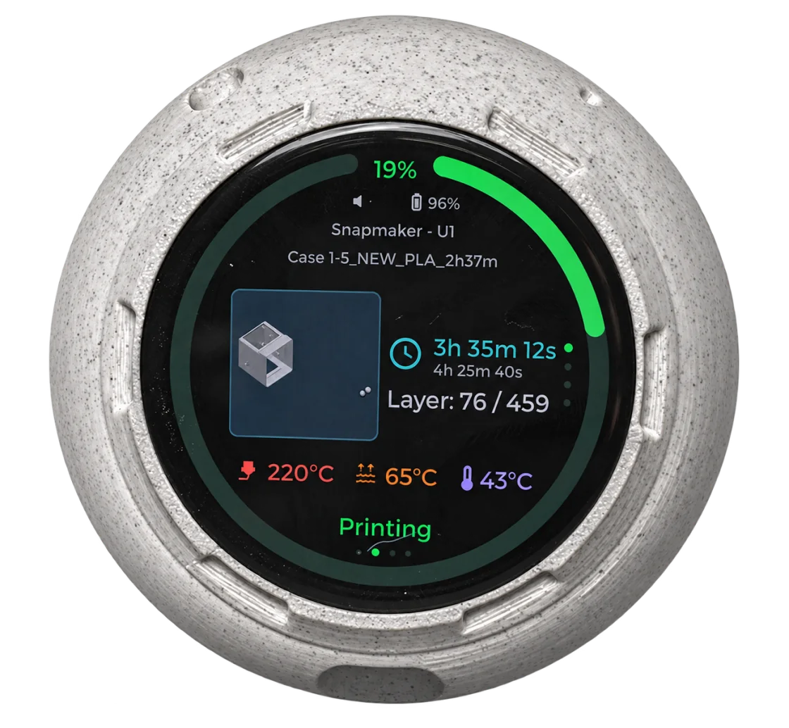
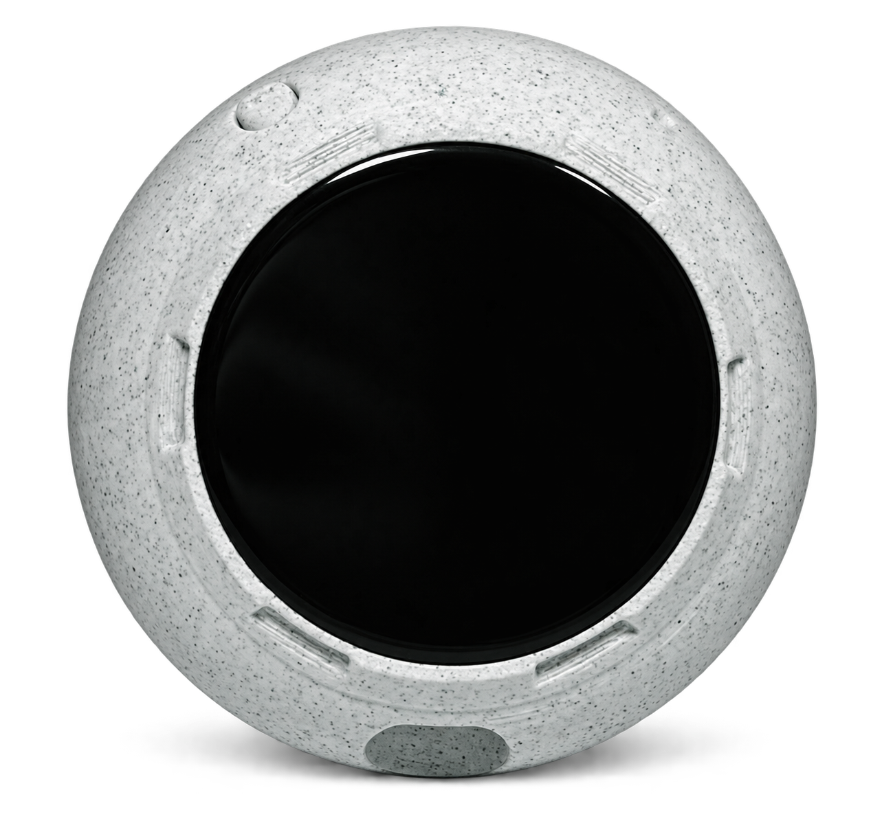
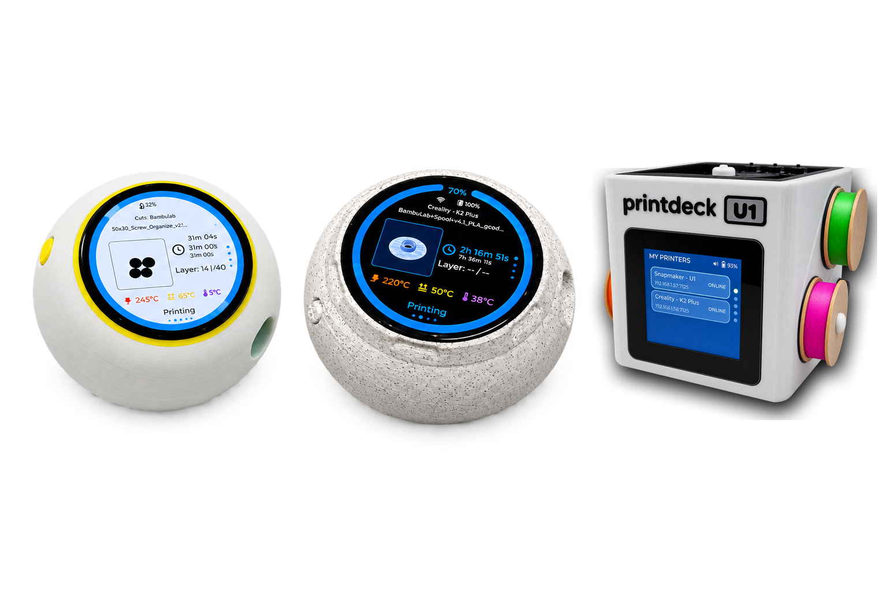

Live print status
See job phase, temperatures, layer information and timing without reaching for a phone or browser.
PrintDeck keeps live progress, temperatures, tools and camera views on a dedicated companion screen. It connects directly to Klipper and supported Bambu Lab printers—without a cloud account.

Keep print progress, temperatures, tools and the camera view within reach—even while you are busy with something else.
See job phase, temperatures, layer information and timing without reaching for a phone or browser.

PrintDeck discovers up to twelve Moonraker extruders and keeps live targets, materials and colours easy to read.

Theme-matched printer animations make heating, printing, pausing and completion immediately recognizable.

A dedicated animated state makes every filament-loading step immediately recognizable.

Switch reaction skins to match your printer, workspace and favourite colours.

For the U1, PrintDeck keeps job, tool and temperature data on a focused companion display. The matching enclosure echoes the printer, with camera support that requires no modification.
Automatically detects your printer settings on the local network.
Keep active tools and their temperatures under control.
Watch your print live without modifying the printer.
Use the round 1.75-inch AMOLED or the compact square 1.54-inch LCD.
Connect USB-C and use the guided installer—no programming tools required.
Add your printer through Web Config and keep its credentials on PrintDeck.
PrintDeck keeps setup and daily use focused: guided USB installation, local printer connections, saved settings, recovery Wi-Fi and wireless updates—all on a display that is ready when you need it.

Tailor the display to your needs
Supports the most popular printers on the market
Conveniently via USB or wirelessly
Fast, secure and dependable
Keep it on a desk, carry it through the workshop or attach The Riverstone to a metal surface. Each enclosure gives the same focused PrintDeck experience a different physical character.
All case designs
PrintDeck keeps setup and daily use focused: guided USB installation, local printer connections, saved settings, recovery Wi-Fi and wireless updates—all on a display that is ready when you need it.
Install the firmware, choose a case and turn a compact touch display into a dedicated printing companion.